CH13-003 — images
【口出し】善意で口を出すほど嫌われる｜関係が壊れる前にやめる一言
ep
CH13
Script Viewer
書庫
snapshot
guide
台本
音声
サムネ
画像
← CH13-002
CH13-004 →
CH13-003
画像
updated_at: 2026-01-14T03:14:08.313083Z
run_id:
CH13-003_redo3_schnell_20260102_101917
CH13-003
助けたい一言が相手を遠ざける／相手のためを思って言った一言…
CH13-003
介護疲れの友人や家族への例／なぜすれ違いが起きるのか
CH13-003
助けたい気持ちと否定された感覚
CH13-003
弱っている時ほどペースを守りたい
CH13-003
なぜ口を出す？怖れの背景／期待と反射が苦しみを増やす
CH13-003
反射に飛びつく問題
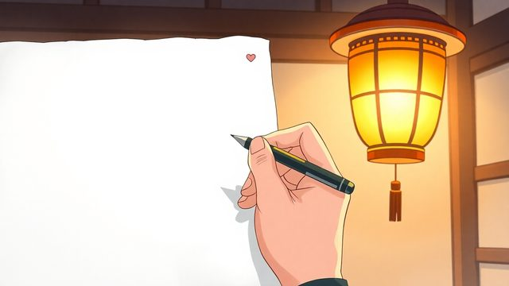
CH13-003
相手への思い込みが鎖になる／連絡が来るだけで胃が痛む関係
CH13-003
苦しみの源は内側の物語
CH13-003
苦しみは内側の反射と執着から
CH13-003
不快な言葉への反応の選択権／反射に流されるか一歩引くか
CH13-003
正しい助言でも主導権を奪うと抵抗が／正しさより選択の尊重を…
CH13-003
家族や近所でのすれ違いの例
CH13-003
親が感じた自立への疑問
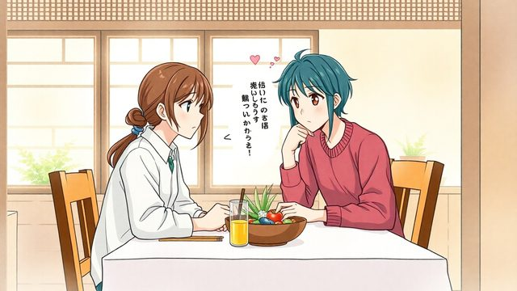
CH13-003
配偶者への食事の助言
CH13-003
傷つきと主導権侵害の感覚／言葉の選び方と選択肢の例
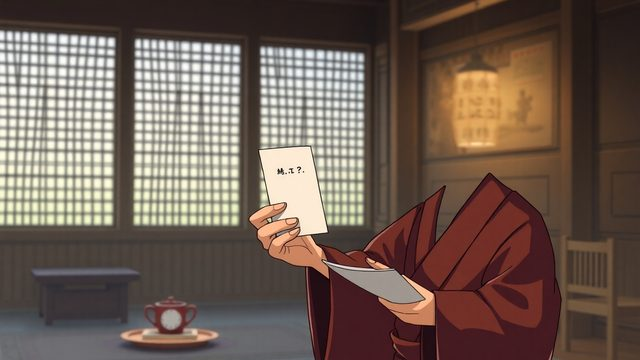
CH13-003
選択肢を示すか判断を任せる
CH13-003
相手が求めるのは安心感／土台が揺らぐと助言は批評に／小鳥を…
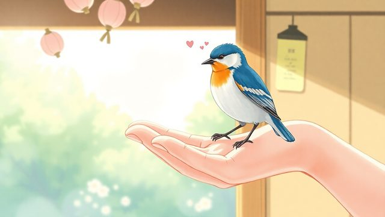
CH13-003
手を緩めると関係が壊れにくい
CH13-003
善意が関係を窒息させる
CH13-003
執着を手放す視点／執着とは相手を変えようとする思い込み
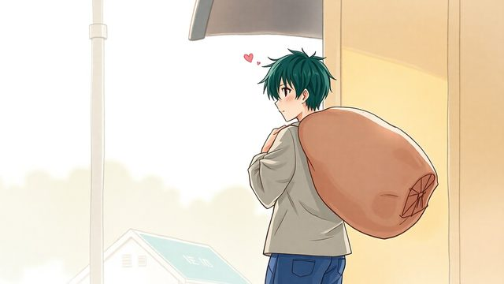
CH13-003
思い込みにしがみつく心の重さ
CH13-003
手を緩めるとは執着を少し手放す
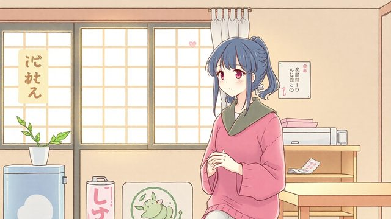
CH13-003
家族の癖を直そうとする例／心の張り詰めた糸がゆるむ
CH13-003
手を緩めると相手も解放される／関係がすり減るのは握りしめ合…
CH13-003
手を緩めることは無関心とは違う
CH13-003
見守りと適度な距離感／手を緩めることへの不安
CH13-003
沈黙への不安とその誠実さ
CH13-003
言葉以外で温かさを伝える方法
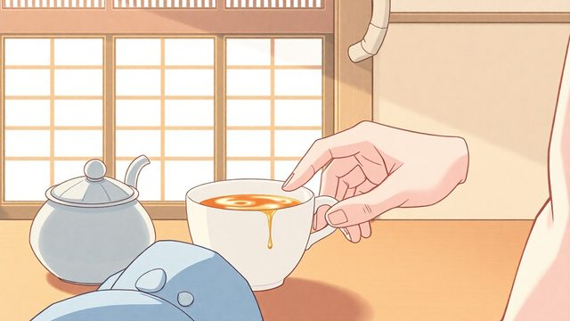
CH13-003
さりげない気遣いの例／見守る姿勢は相手の力を信じる
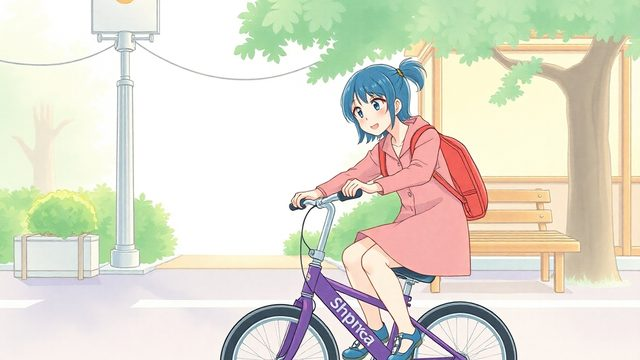
CH13-003
自転車練習で手を離す例
CH13-003
口出しをやめる不安は自然
CH13-003
相手の経験や知恵を軽視しがち／役割を導く者から見守る者へ
CH13-003
黙ることは新しい関わり方の始まり
CH13-003
角を立てずに線を引く具体的な一言
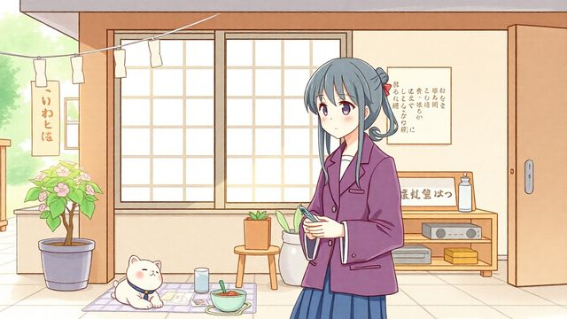
CH13-003
断れない頼みごとへの対応例
CH13-003
短い境界線の置き方
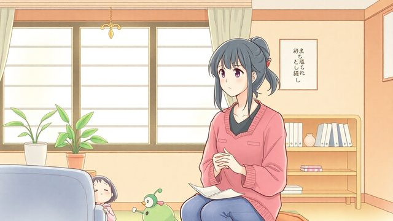
CH13-003
嫌味やマウントへの対処例
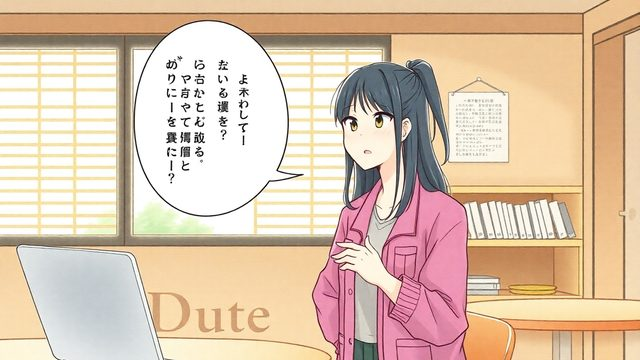
CH13-003
評価の土俵に乗らない返し方／話題をそらす一手
CH13-003
一言が効果的な理由
CH13-003
境界線を引くことと日常の消耗
CH13-003
短い説明と評価に乗らない意識／習慣を身につける小さな繰り返し
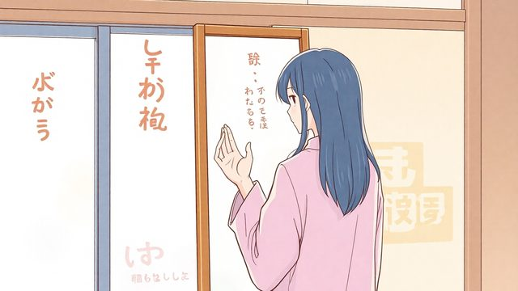
CH13-003
朝の役割決めの例
CH13-003
役割決めが効果的な理由／一拍がすべてを変える
CH13-003
夜の振り返りで自分を責めない／感情の正体に目を向ける
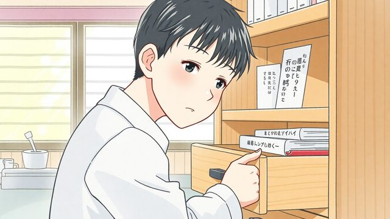
CH13-003
言い換えのパターンを仕舞う
CH13-003
朝と夜の習慣で衝動が合図に
CH13-003
不安に振り回されない合図
CH13-003
今は黙っていようとつぶやく
CH13-003
一拍で距離を置き関係を削らない
CH13-003
すべてを解決する必要はない
CH13-003
自分の心の主導権を取り戻す
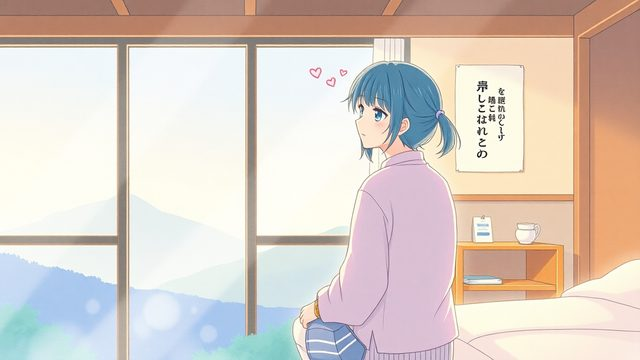
CH13-003
明日からできるシンプルな一歩
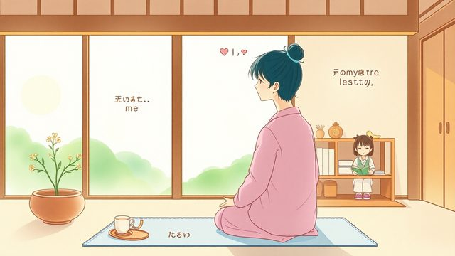
CH13-003
心に余白を作り関係を変える